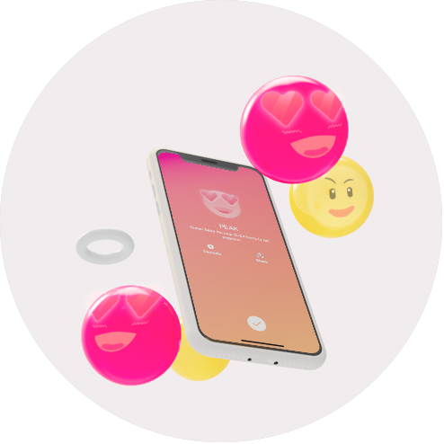
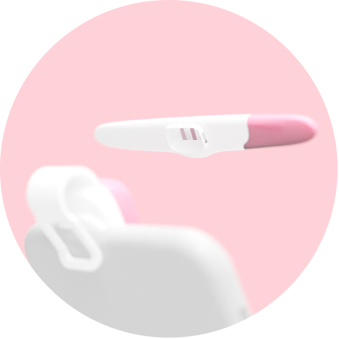
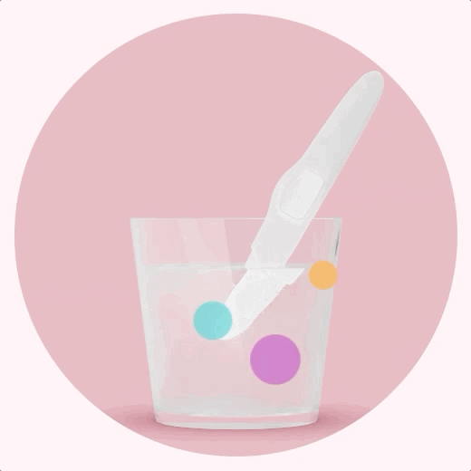

產品網頁設計
根據行銷團隊提供的文字與故事，我設計並執行網頁製作，包含版面設計、3D Rendering、利用 Bootstrap / JavaScript / Git 實作網頁。 實際的網站作品請參考下方連結。


3D 圖像設計
使用 Keyshot Render 加上後製製作符合網頁調性的圖像。


CSS 動畫
利用CSS Animation 在圖像疊上動畫。


與工程師協同合作
我利用 Git 控制網頁版本，並與方便與工程師溝通並協同完成網頁。 在我完成頁面設計時，工程師可以同步的在專案中導入多語言、流量追蹤等工作事項。
數據追蹤
網頁設計完成後，我的工作就是監看GA的後台，觀察網頁瀏覽的成效。 並在定期的會議上向主管與同事分析我看到的現象，並提出改善。